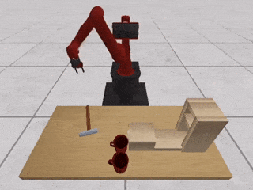
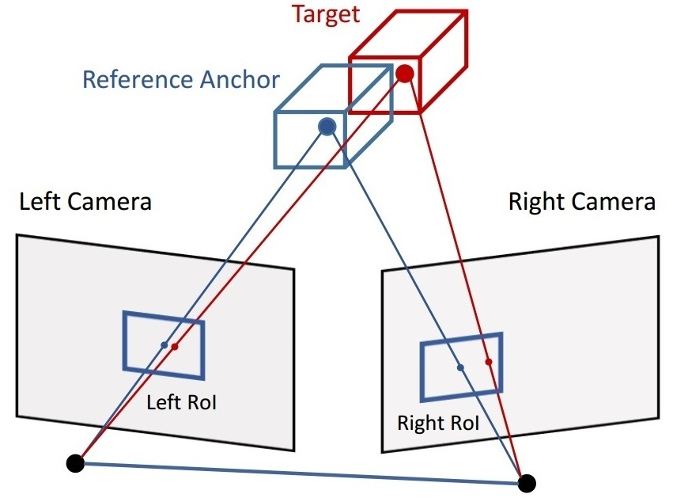
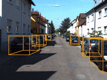
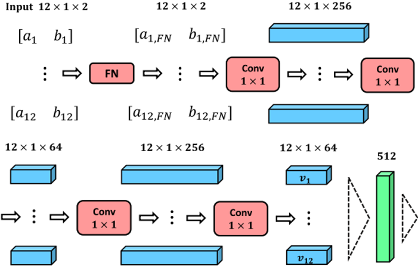

|
Zengyi Qin 秦增益
Undergraduate Student Tsinghua University, Beijing, China qinzy16 [at] mails.tsinghua.edu.cn |
I am an undergraduate student of Electronic Engineering at Tsinghua University. I am passionate about 3D visual perception, robotic plannning and control, machine learning, as well as biomedical signal processing. I also have experience in the 3D perception system of self-driving vehicles.
 |
KETO: Learning Keypoint Representations for Tool Manipulation KETO is a framework for robots to manipulate unseen objects as tools to complete diverse tasks. We proposed a method to learn the keypoint representations of objects, which simplify the manipulation task and improve the generality to novel objects. |
 |
Triangulation Learning Network: from Monocular to Stereo 3D Object Detection This is a pioneering work on stereo image based 3D object detection without calculating the pixel-level depth maps. We proposed a triangulation learning method to learn the object-level stereo geometric correspondence for 3D object detection. |
 |
MonoGRNet: A Geometric Reasoning Network for Monocular 3D Object Localization A state-of-the-art monocular 3D object detection approach based on geometric reasoning. We proposed to decompose the whole task into four progressive sub-tasks that significantly facilitates the monocular 3D object detection. |
 |
sEMG based Tremor Severity Evaluation for Parkinson's Disease using a Light-weight CNN A machine learning framework to assist the diagnosis of Parkinson's Disease by assessing the pathological tremor. We proposed a light-weight convolutional neural network and a similarity learning strategy to handle the scarcity of medical data. |
Bachelor of Engineer, Electronic Engineering
Advisor: Professor Jiansheng Chen